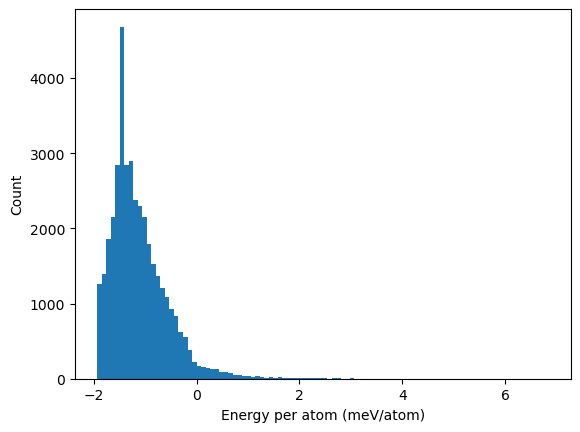
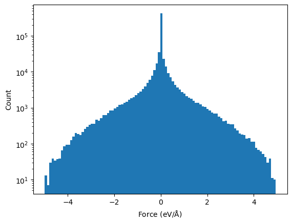

Parametrising a Machine Learning Interatomic Potential #
References#
In this notebook we fit an Atomic Cluster Expansion interatomic potential using the pacemaker software.
from core import Workflow
from core.gui import PyironFlow
from pyiron_nodes.atomistic.fitting.dataset import ReadPickledDatasetAsDataframe, SplitTrainingAndTesting
from pyiron_nodes.atomistic.fitting.ace import ParameterizePotentialConfig, RunLinearFit, SavePotential, PredictEnergiesAndForces, DesignMatrix
from pyiron_nodes.atomistic.fitting.plot import PlotEnergyHistogram, PlotForcesHistogram, PlotEnergyFittingCurve, PlotForcesFittingCurve
from pyiron_nodes.basic.math import SliceArray, GetVector, MinMaxIndices
def make_linearfit(
workflow_name: str,
delete_existing_savefiles=False,
file_path: str = "mgca.pckl.tgz",
compression: str | None = None,
training_frac: float | int = 0.5,
number_of_functions_per_element: int | None = 10,
rcut: float | int = 6.0,
):
wf = Workflow(workflow_name, delete_existing_savefiles=delete_existing_savefiles)
if wf.has_saved_content():
return wf
# Workflow connections
wf.load_dataset = ReadPickledDatasetAsDataframe(
file_path=file_path, compression=compression
)
wf.split_dataset = SplitTrainingAndTesting(
data_df=wf.load_dataset.outputs.df, training_frac=training_frac
)
wf.parameterize_potential = ParameterizePotentialConfig(
number_of_functions_per_element=number_of_functions_per_element, rcut=rcut
)
wf.run_linear_fit = RunLinearFit(
potential_config=wf.parameterize_potential,
df_train=wf.split_dataset.outputs.df_training,
df_test=wf.split_dataset.outputs.df_testing,
verbose=False,
)
wf.save_potential = SavePotential(basis=wf.run_linear_fit.outputs.basis)
wf.predict_energies_forces = PredictEnergiesAndForces(
basis=wf.save_potential.outputs.basis,
df_train=wf.split_dataset.outputs.df_training,
df_test=wf.split_dataset.outputs.df_testing,
)
# Input mapping
wf.inputs_map = {
"run_linear_fit__verbose": "verbose",
"save_potential__filename": "filename",
"parameterize_potential__number_of_functions_per_element": "number_of_functions_per_element",
"parameterize_potential__rcut": "rcut",
}
# Output maping
wf.outputs_map = {
"save_potential__yace_file_path": "yace_file_path",
"predict_energies_forces__data_dict": "data_dict",
}
return wf
Loading the dataset #
Recalling the workflow, we are in the first essential step of loading the training dataset

As a first step, we load the dataset by specifying the `file_path’. This dataset has been generated for the CaMg system using the ASSYST approach discussed in the previous session 02_assyst.ipynb.
wf = Workflow("potential")
wf.load_dataset = ReadPickledDatasetAsDataframe(file_path = "data/mgca.pckl.tgz", compression = None)
wf.load_dataset.pull();
The histogram of the total energies of all atomic structures in the dataset is plotted using the `PlotEnergyHistogram’ node.
wf.hist_plot = PlotEnergyHistogram(df = wf.load_dataset.outputs.df, log_scale = False)
wf.hist_plot.pull();

Similarly, using the PlotForcesHistogram Node, we can plot the forces histogram
wf.hist_plot_log = PlotForcesHistogram(df = wf.load_dataset.outputs.df, log_scale = True)
wf.hist_plot_log.pull();

Split the dataset into training and test #
In a second step, we split the dataset into training and testing datasets.
This is done by choosing the percentage used for the training dataset through the training_frac parameter, where training_frac = 0.5 means we use 50% for training and 50% for testing.
wf.split_dataset = SplitTrainingAndTesting(data_df = wf.load_dataset.outputs.df.value, training_frac = 0.5)
wf.split_dataset.run();
Define and specify the configuration of the ACE potential #
Following the PACEmaker notation, we create a file similar to input.yaml (see the PACEmaker documentation for more details).
fit:
fit_cycles: 1
loss: {L1_coeffs: 1e-08, L2_coeffs: 1e-08, kappa: 0.08, w0_rad: 0, w1_rad: 0, w2_rad: 0}
maxiter: 1000
optimizer: BFGS
trainable_parameters: ALL
weighting: {DE: 1.0, DElow: 1.0, DEup: 10.0, DF: 1.0, DFup: 50.0, energy: convex_hull,
nfit: 20000, reftype: all, seed: 42, type: EnergyBasedWeightingPolicy, wlow: 0.95}
.
.
.
potential:
bonds:
ALL:
dcut: 0.01
radbase: SBessel
radparameters: [5.25]
rcut: 6.0
elements: [Mg, Ca]
embeddings:
ALL:
fs_parameters: [1, 1, 1, 0.5]
ndensity: 2
npot: FinnisSinclairShiftedScaled
functions:
number_of_functions_per_element = 300
ALL:
lmax_by_orders: [15, 6, 2, 1]
nradmax_by_orders: [0, 6, 3, 1]
1. Embeddings#
specify how the atomic energy \(E_i\) depends on the ACE properties/densities \(\varphi\). The most approximate approach, but the most efficient for potential fitting, is the linear expansion \(E_i = \varphi\). Non-linear expansions, e.g. including the square root, provide more flexibility and accuracy of the final potential, but require significantly more computational resources for fitting.
Embeddings for ALL species:
non-linear
FinnisSinclairShiftedScaled2 densities
fs_parameters’: [1, 1, 1, 0.5]: $\(E_i = 1.0 * \varphi(1)^1 + 1.0 * \varphi(2)^{0.5} = \varphi^{(1)} + \sqrt{\varphi^{(2)}} \)$
2. Radial functions#
Radial functions are defined by orthogonal polynomals. Examples are:
(a) Exponentially-scaled Chebyshev polynomials (λ = 5.25)
(b) Power-law scaled Chebyshev polynomials (λ = 2.0)
(c) Simplified spherical Bessel functions

Radial functions specification have to be provided for ALL species pairs (i.e. Al-Al, Al-Li, Li-Al, Li-Li):
based on the Simplified Bessel function
and cutoff, e.g. \(r_c=6.0\)
3. B-basis functions#
B-basis functions specifications for ALL species type interactions, i.e. Al-Al block:
maximum order = 4, i.e. body-order 5 (1 central atom + 4 neighbour densities)
nradmax_by_orders: 15, 3, 2, 1
lmax_by_orders: 0, 3, 2, 1
For simplicity, the main inputs that we will consider for the potential configurations are:
number_of_functions_per_element: specifies how many functions will be provided in the potentialrcut: specifies what the cutoff radius is
wf.parameterize_potential = ParameterizePotentialConfig(number_of_functions_per_element = 10, rcut = 6.0)
Check the current potential configurations in dictionary format,
wf.parameterize_potential.pull()
{'potential_config': PotentialConfig(deltaSplineBins=0.001, elements=None, embeddings=Embeddings(ALL=EmbeddingsALL(npot='FinnisSinclairShiftedScaled', fs_parameters=[1, 1], ndensity=1)), bonds=Bonds(ALL=BondsALL(radbase='SBessel', radparameters=[5.25], rcut=6.0, dcut=0.01)), functions=Functions(number_of_functions_per_element=10, ALL=FunctionsALL(nradmax_by_orders=[15, 6, 4, 1], lmax_by_orders=[0, 6, 5, 1])))}
Linear fitting #
Finally, we run our fit with the thus defined potential_config and then save the potential files inside a new folder.
Note: Setting verbose = True will show all the details of building the design matrices.
wf.run_linear_fit = RunLinearFit(
potential_config = wf.parameterize_potential,
df_train = wf.split_dataset.outputs.df_training,
df_test= wf.split_dataset.outputs.df_testing,
verbose = False,
store = False,
)
wf.run_linear_fit.pull();
/srv/conda/envs/notebook/lib/python3.12/site-packages/pyace/multispecies_basisextension.py:4: UserWarning: pkg_resources is deprecated as an API. See https://setuptools.pypa.io/en/latest/pkg_resources.html. The pkg_resources package is slated for removal as early as 2025-11-30. Refrain from using this package or pin to Setuptools<81.
import pkg_resources
====================== TRAINING INFO ======================
Training E RMSE: 160.54 meV/atom
Training F RMSE: 105.63 meV/A
======================= TESTING INFO =======================
Testing E RMSE: 158.99 meV/atom
Testing F RMSE: 109.50 meV/A
wf.save_potential = SavePotential(basis = wf.run_linear_fit.outputs.basis)
INFO:root:run_linear_fit/basis -> save_potential/basis
wf.save_potential.pull()
====================== TRAINING INFO ======================
Training E RMSE: 160.54 meV/atom
Training F RMSE: 105.63 meV/A
======================= TESTING INFO =======================
Testing E RMSE: 158.99 meV/atom
Testing F RMSE: 109.50 meV/A
Potentials "Ca_Mg_linear_potential.yaml" and "Ca_Mg_linear_potential.yace" are saved in "/home/jovyan/Linear_ace_potentials".
{'basis': <pyace.basis.ACEBBasisSet at 0x7f10f7cb9df0>,
'yace_file_path': '/home/jovyan/Linear_ace_potentials/Ca_Mg_linear_potential.yace'}
Workflow #
workflow_name = 'LinearAceDataset'
file_path = 'data/mgca.pckl.tgz'
compression = None
training_frac = 0.5
number_of_functions_per_element = 10
rcut = 6.0
wf = Workflow(workflow_name)
# Workflow connections
wf.load_dataset = ReadPickledDatasetAsDataframe(
file_path=file_path, compression=compression
)
wf.split_dataset = SplitTrainingAndTesting(
data_df=wf.load_dataset.outputs.df, training_frac=training_frac
)
wf.parameterize_potential = ParameterizePotentialConfig(
number_of_functions_per_element=number_of_functions_per_element, rcut=rcut
)
wf.run_linear_fit = RunLinearFit(
potential_config=wf.parameterize_potential,
df_train=wf.split_dataset.outputs.df_training,
df_test=wf.split_dataset.outputs.df_testing,
verbose=False,
)
wf.save_potential = SavePotential(basis=wf.run_linear_fit.outputs.basis)
wf.predict_energies_forces = PredictEnergiesAndForces(
basis=wf.run_linear_fit.outputs.basis,
df_train=wf.split_dataset.outputs.df_training,
df_test=wf.split_dataset.outputs.df_testing,
)
INFO:root:load_dataset/df -> split_dataset/data_df
INFO:root:parameterize_potential/potential_config -> run_linear_fit/potential_config
INFO:root:split_dataset/df_training -> run_linear_fit/df_train
INFO:root:split_dataset/df_testing -> run_linear_fit/df_test
INFO:root:run_linear_fit/basis -> save_potential/basis
INFO:root:run_linear_fit/basis -> predict_energies_forces/basis
INFO:root:split_dataset/df_training -> predict_energies_forces/df_train
INFO:root:split_dataset/df_testing -> predict_energies_forces/df_test
wf.run()
Restoring node outputs c3f1ae7423c83f5986c42e2be2bb7f336de8e449fab3010ce0896e72f6ddf419 run_linear_fit True
None::
restored node True
Potentials "Ca_Mg_linear_potential.yaml" and "Ca_Mg_linear_potential.yace" are saved in "/home/jovyan/Linear_ace_potentials".
Restoring node outputs 50871f8c1f810888e270c048f045bcc677ccab67319788a0eb56d1c528eefb7e predict_energies_forces True
None::
restored node True
Loading the workflow into the GUI #
Run the workflow using the GUI and perform a level 1 validation of our linear ACE potential.
Helpful nodes for performing this task:
atomistic -> mlips -> fitting -> ace: contains all nodes to run the linear ACE fit, to plot the data histograms and the fitting’s accuracy curves.

NOTE: You can change the ratio of the canvas to the whole screen by changing the value of flow_widget_ratio between 0 to 1 (try 0.6 or 0.7)
pf = PyironFlow([wf], nodes_path="pyiron_nodes")
pf.gui
Exercise: change the number_of_functions_per_element to a higher value (i.e., 50) and check the fitting curves. Did the fit get better or worse?
Note: You can save the potential under a new name using the filename input in save_potential node.